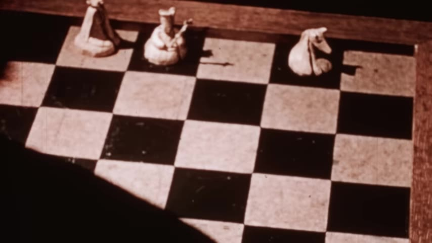
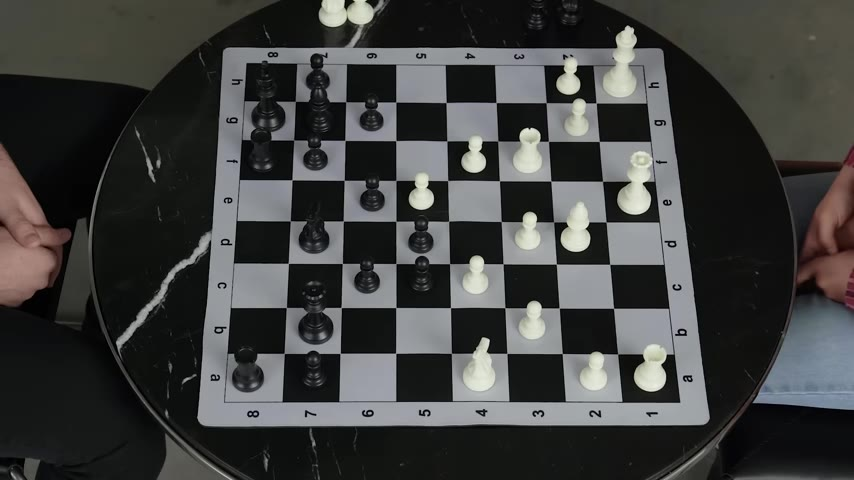
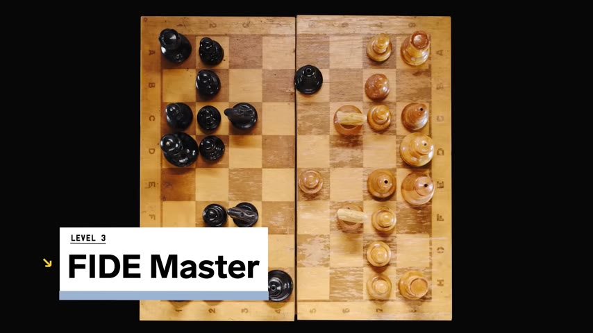
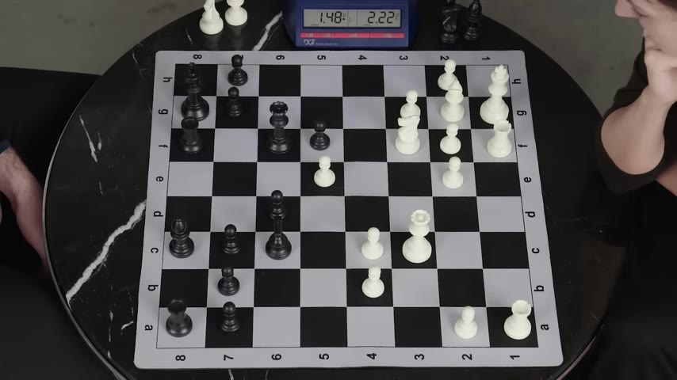
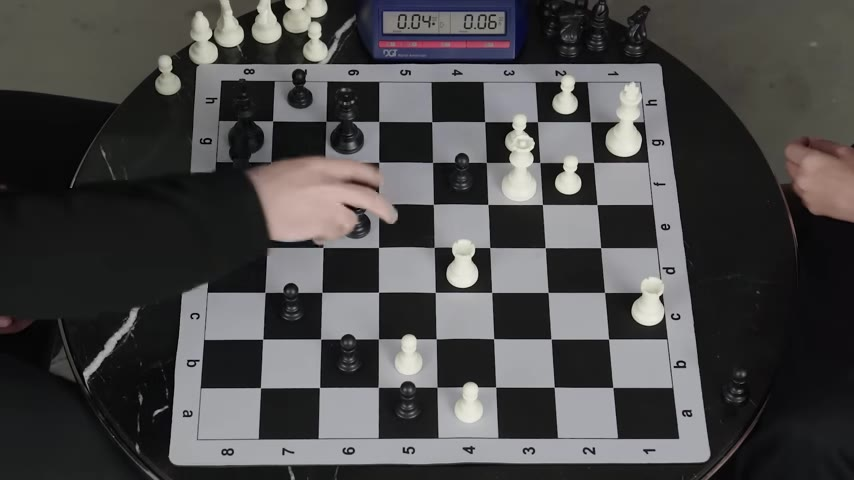
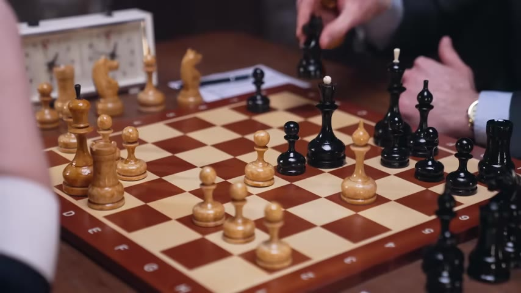

Levy Rozman (GothamChess) and eight-time US Women's Chess Champion Irina Krush break chess down from moving the pieces to AI-powered strategy — then play a blitz game to test it.
Watch on YouTubeLevy Rozman — known as GothamChess on YouTube — sits down with Irina Krush, eight-time US Women's Chess Champion and Grandmaster, to explain chess at five levels of increasing difficulty. Novice, Intermediate, FIDE Master, Advanced, and AI Expert. They don't stop at explanation: they play.

The goal is to trap the king so it can't escape — checkmate. Beginners learn piece movement (pawns, knights, bishops, rooks, queen), then the core question: is the position open or closed? Count the pawns. Fewer pawns eaten means more of the fence is standing — you can't see through it. When pawns fall, diagonals open and bishops come alive.

Think of it like a fence. If you and your neighbor have a full fence, you can't see each other. If only four pawns are left, somebody knocked down half the fence.— Levy Rozman
The middle game is where tactics — immediate gain or loss — mix with strategy. A skewer hits a stronger piece in front of a weaker one. Material advantage alone doesn't guarantee a win; Irina points out that pieces are either good or bad for you and your opponent — it's not checkers, you don't have to take. Keeping the tension between pawns is a fundamental intermediate skill: holding the stare-down instead of trading.

:::
Initiative means one player is the aggressor while the other responds — like one boxer pushed into a corner. The board is 64 squares; control comes through tempo (time), space (board control), and harmony (pieces working together). Irina calls harmony the overarching principle:
Harmony trumps everything. You could be winning in material, but if it's not your turn, harmony is the end goal.— Irina Krush
A pawn break at the right time can activate a blocked bishop and open a file for a rook — two pieces that were stuck a move ago, suddenly free.

They play a blitz game. Levy pushes pawns forward, Irina holds a fortress. Both feel pressure to act. Levy sacks the exchange; Irina defends. Time runs down — Irina almost loses on clock. The game is messy, tactical, and ends with both players exhausted from the rapid-fire decisions.

Irina studies AI and computer science. She and colleague Ashton Anderson (University of Toronto) built Maya — an AI that doesn't play like an engine, but like a human at different skill levels. Instead of brute-force search (Stockfish evaluates millions of nodes per second), Maya uses neural networks like AlphaZero and Leela to predict what a specific human would play from any position. They've built a "style vector" for each player — numbers representing tendencies like king safety, center control, sacrificial play — and can map those back to human-readable concepts.

:::
Irina notes that AlphaZero and Leela have inspired new ideas in human chess — "sparks of creativity" — but the incremental improvements in TCEC engines (more data, deeper network) aren't as interesting as building entities that can interact in virtual settings within the next five years.
Chess exposes all of your flaws. Your training habits, the way you approach certain positions — you can see yourself on the chessboard.— Irina Krush
Kasparov lost to Deep Blue in 1997. AI has been better than humans at chess for 26 years. The next frontier isn't stronger engines — it's more human ones.